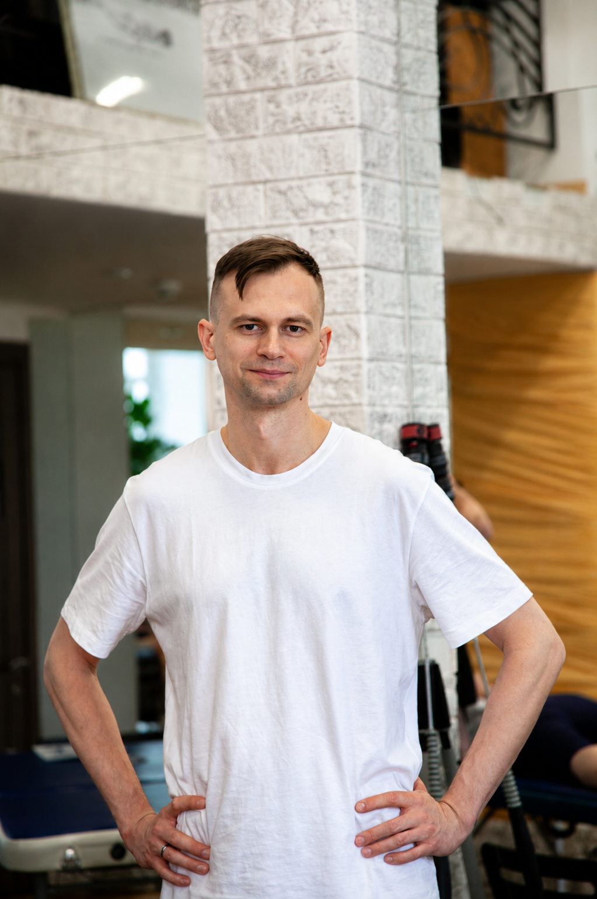

Слушать, а не давить
Тело само подсказывает, где ему тяжело. Задача — услышать это, а не навязать своё.
Инь · другая сторона
Эта страница не про услуги. Она про ту часть меня, которая не помещается в резюме: тело, внимание и равновесие.
Читать дальше
Больше пятнадцати лет я пишу софт: от прошивок для микроконтроллеров до гомоморфного шифрования. Это мир логики, абстракций и экрана.
В какой-то момент мне захотелось чего-то противоположного — живого, тактильного, того, что нельзя отладить через логи. Так в моей жизни появился массаж: сначала как интерес, потом как серьёзное обучение, а затем как практика.
Для меня это не вторая профессия «на всякий случай», а способ держать баланс. Работа с телом учит замедляться, слушать и замечать то, что не видно сразу.
Каждая школа добавляла новый взгляд на то, как устроено тело и как с ним говорить
Классический массаж · Спортивный массаж
Основа: анатомия, базовые техники, понимание того, как работают мышцы и что им нужно.
Матрица массажа
Системный взгляд: тело как единое целое, где напряжение в одном месте отзывается в другом.
Основы метавитоники · Осцилляционный подход · Артикуляционный подход
Тонкая работа: мягкие ритмичные воздействия, внимание к суставам и к тому, как тело само отвечает на прикосновение.
Нажмите на изображение, чтобы увеличить
Тело само подсказывает, где ему тяжело. Задача — услышать это, а не навязать своё.
Боль в одном месте часто начинается совсем в другом. Важно найти, откуда она идёт.
Полное присутствие без спешки и лишних слов. Это и есть главная техника.
О теле, практике или просто о жизни — пишите, я с удовольствием отвечу.